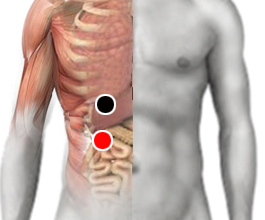

Astrovirus
Par
diafragma - píloro

Generalidades:
Síntomas gastrointestinales como diarrea y gastroenteritis, vómito, nausea, fiebre, malestar general, dolor abdominal. Principalmente afecta a infantes menores de 2 años y personas inmunodeprimidas. Se puede considerar oportunista.
El virus fue descubierto en 1975 mediante el microscopio electrónico, su estructura es pentagonal o hexagonal. Afecta a varias especies de mamíferos y aves. Su periodo de incubación es de tres a cuatro días. Destruye el epitelio intestinal provocando diarrea
Transmisión
Por alimentos o agua contaminada.